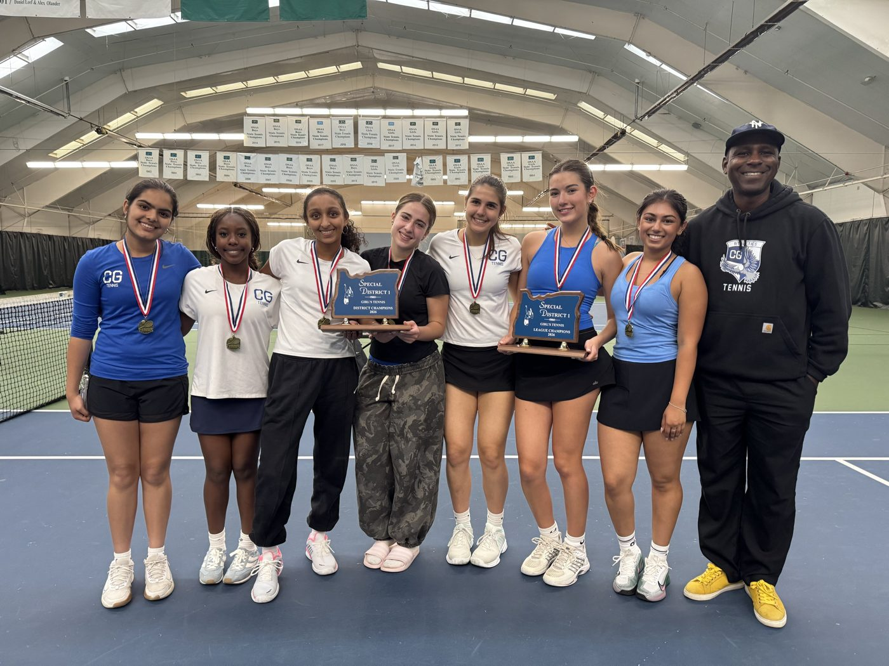
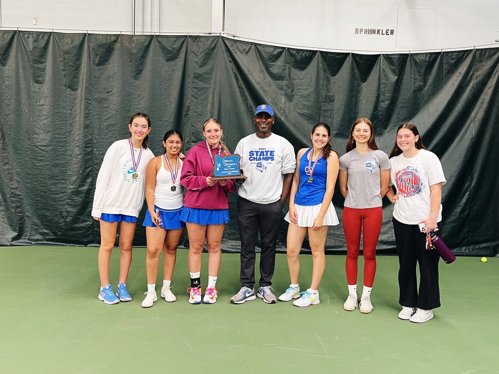
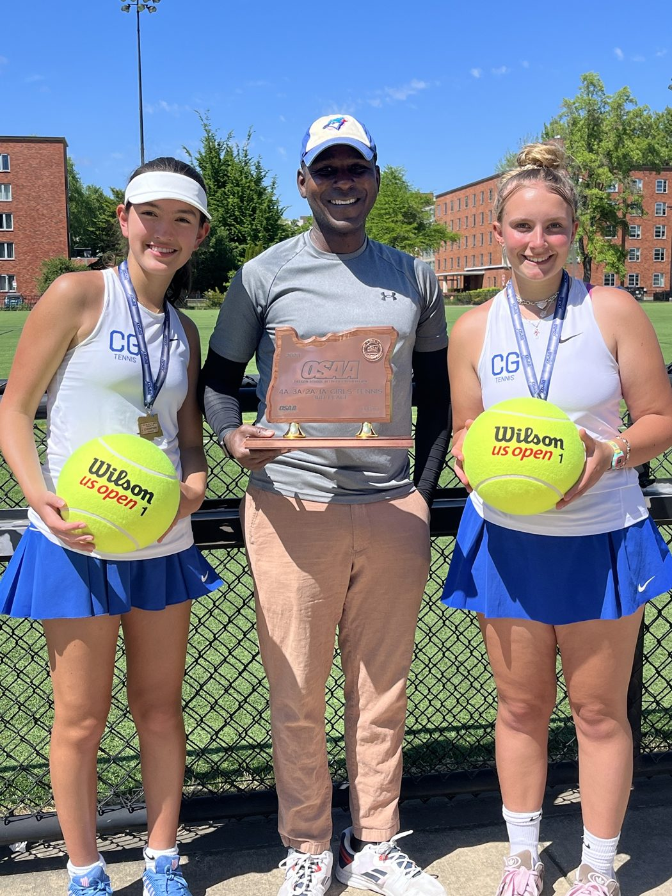
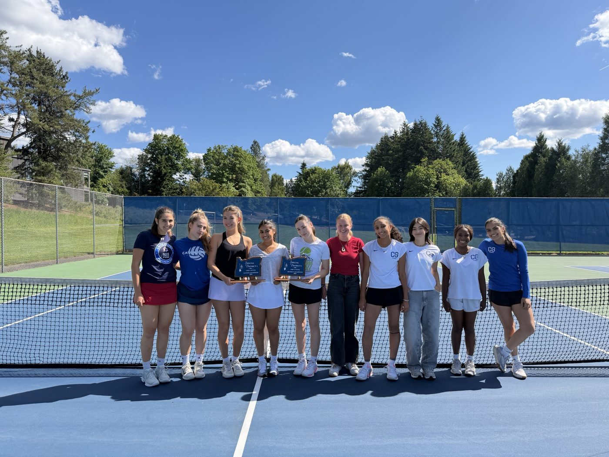
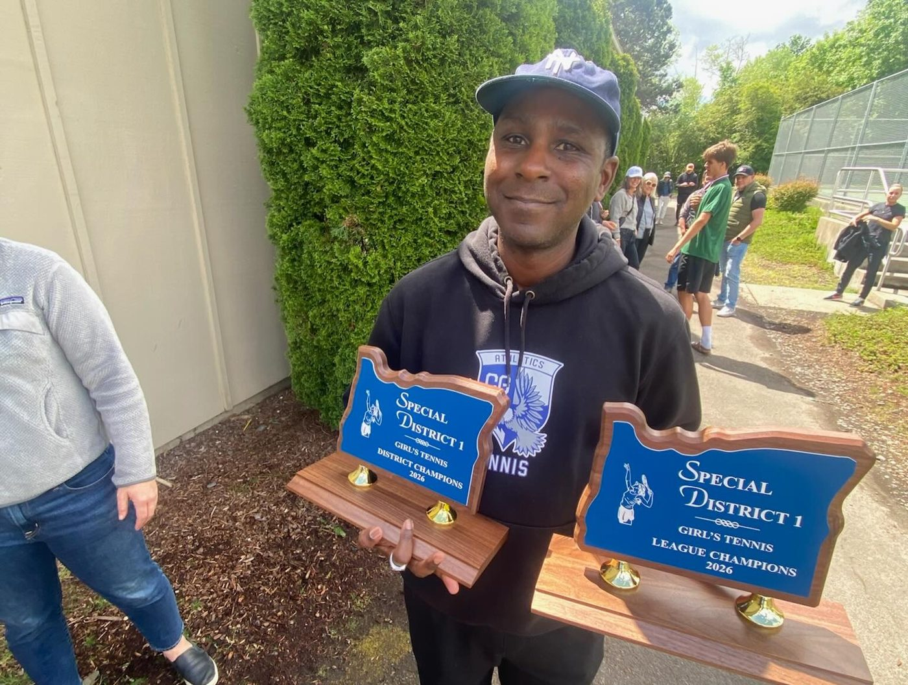
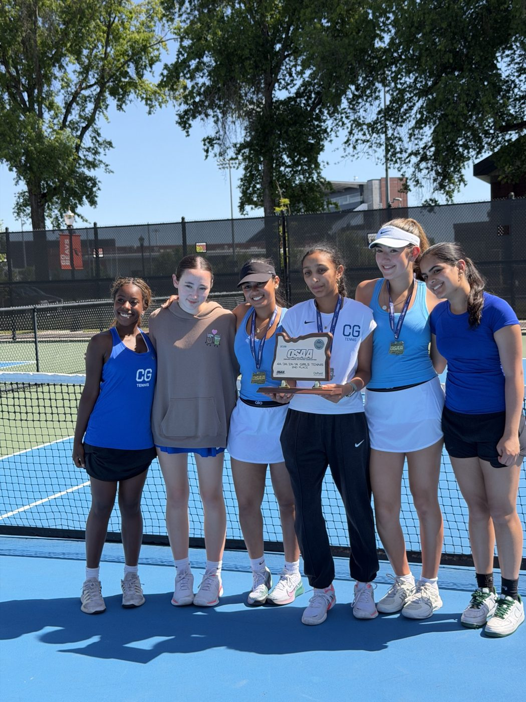
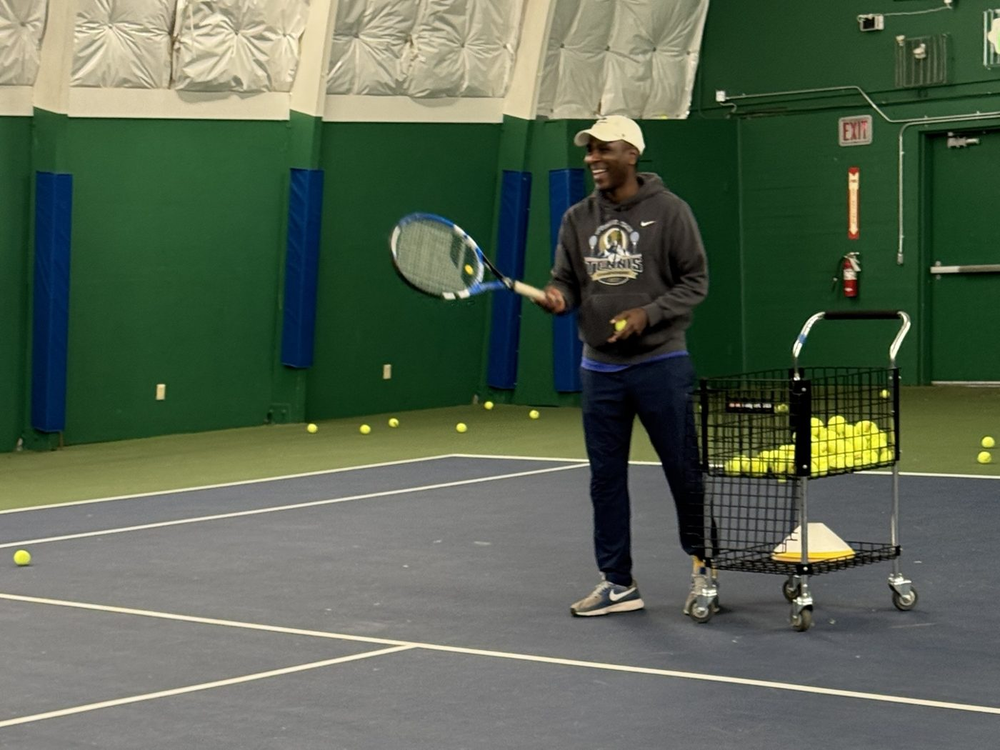
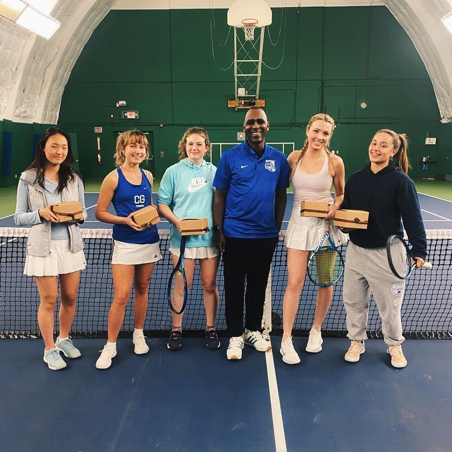
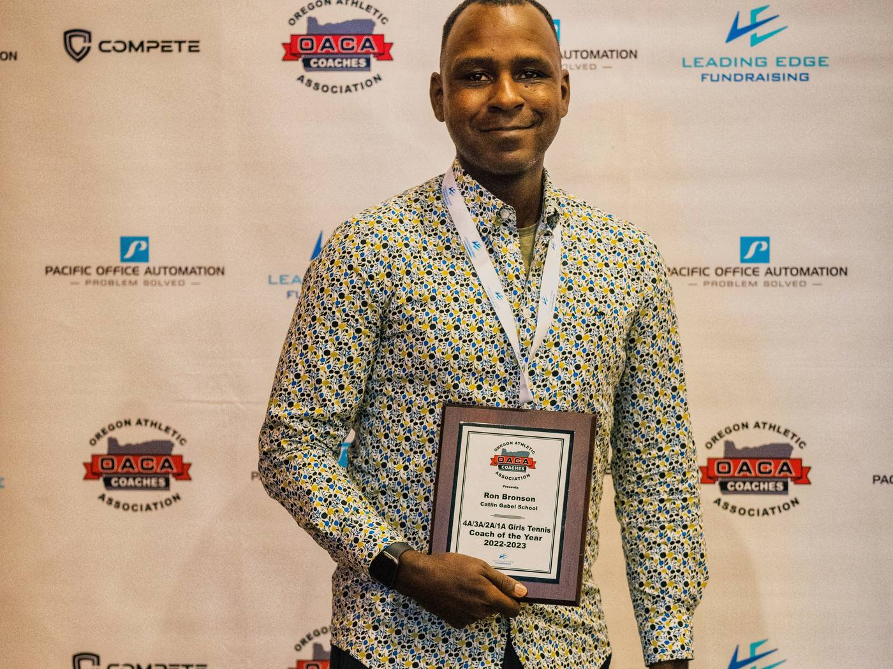

Coaching








Ron Bronson enters his eighth year as head girls tennis coach at Catlin Gabel School in 2027. In 2026, the Eagles won their third district title and fourth conference title of his tenure en route to a 14-3-1 season record and a second-place finish at the state tournament. Seven players qualified for state, tying a program record set by his 2022 squad.
In 2022, Bronson led the Eagles to their sixth OSAA state title in program history, capping a run of 22 consecutive dual-match victories across the 2021 and 2022 seasons. His teams also established a program-record 36-match unbeaten streak in conference play before suffering their first league defeat in 2024. Across six competitive seasons, the Eagles have lost just three conference matches and tied twice.
Catlin Gabel has finished in the top five at every OSAA state championship held since 2022. In 2023, the program produced its first state doubles champions since 1996 and has since won three of the last four 4A/3A/2A/1A girls state doubles titles. Bronson has also coached two state singles finalists (2022, 2026).
At Catlin Gabel, Bronson oversees a no-cut program where more than 20 athletes receive varsity competition opportunities each season. His approach emphasizes player development, independent decision-making, and giving athletes of different ability levels meaningful opportunities to compete.
Prior to Catlin Gabel, Bronson coached high school and collegiate programs in four states. Across his high school coaching career, his teams have compiled a 91-33-4 record and won nine district, regional and conference titles. His players have earned 15 All-State selections and four individual state championships in Oregon and Wyoming.
Bronson spearheaded a nearly seven-year effort to establish Oregon’s first dual-team state tennis championships, building a statewide coalition of coaches and developing the proposal approved by OSAA in 2026. Beginning in 2027, the tournament will expand postseason competition to 56 boys’ and girls’ teams statewide.
In 2019, he founded OregonTennis.org, the country’s only independent statewide high school tennis ranking system. He developed the platform’s original statistical models, historical archives, and tools for evaluating high school teams across Oregon.
Bronson played collegiate tennis at Monmouth College after serving in the U.S. Air Force and was a four-year letterwinner at Plainfield (NJ) High School under the tutelage of Eastern Tennis Hall of Famer Donald J. Van Blake.
Following Van Blake’s death, Bronson returned to high school coaching in 2019, intending to spend one season honoring his former coach. What began as a one-year commitment ultimately led him to Catlin Gabel, where he has continued coaching ever since.

Coaching honors
NFHS Oregon Girls Tennis Coach of the Year
OACA 4A-1A Girls Tennis Coach of the Year
4A-1A District 1 & Conference Girls Tennis Coach of the Year
Writing on coaching
On Developing Leaders
When it’s possible, I like finding parallels between managing people in professional environments with the early-stage development of young leaders as a high school tennis coach.
I Built a Power Ranking for Oregon High School Tennis
I’ve owned the Oregon high school tennis rankings site for five years.
On Adapting My Coaching Philosophy
Coaching interviews at the high school and small college level, mostly relate to your philosophy.
Why I Keep Coaching
Players have to earn trust, but I like building a culture where players have agency to help direct their practices.
Motivating (Or Setting Realistic Goals When Your Team Loses a Lot)
In the past, I’ve coached teams that were just excited to win at all.
On Lineups, Ladders & High School Tennis
The conventional wisdom of most high school coaches is the best way to determine a lineup is using head-to-head challenge matches.
Improving Oregon’s Broken High School Tennis Format
Talking about a high school tennis format is a pretty niche discussion.
Naming the courts
During my senior year, my high school tennis coach and I were talking about our season and his legacy.